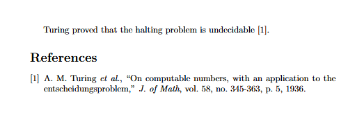

1. What is $\LaTeX$ ?
$\LaTeX$ is a software system that generates PDF documents using a compiler called $\TeX$. You can think of it
as analogous to how python runs low-level C code (like $\TeX$), but is written in more concise, human-readable language ($\LaTeX$!).
This software makes it very efficient to type mathematical equations, which is why I suggest you learn it.
It also makes it very easy to cite papers, insert images, tables, and bibliographies (automatically formatted to MLA, APA, IEEE, etc.),
typeset books, write in non-Latin alphabets, and so much more.
If you are interested in a career where you will do a lot of technical writing, or even creative writing,
learning how to use $\LaTeX$ will help you tremendously. Even if you're not interested in those things,
it will help you with your homework assignments in other courses, and probably impress your professors.
I don't require that my students use it, but I highly, highly recommend it. Once you've written something
using $\LaTeX$, you can never go back to MS Word.
Pronunciation
I have embarrassed myself pronouncing this the same way you would pronounce the stretchy rubbery material
for too long to allow my students to make the same mistakes as me.
The compiler $\TeX$ is named for the Greek word τέχνη (techne), meaning it is properly pronounced
like the "tech" in "technology". Leslie
Lamport bundled his macros into software he
called "Lamport's TeX", eventually shortened to $\LaTeX$.
Thus, the software name is properly pronounced "la-tek", but when people correct me, they
usually call it "lay-tek". I think it's that one.
2. Getting Started
Homework Template
I have written out a small template for homework assignments that contains many macros and
imports that I have been building up since my undergraduate years. You can download it below:
You don't have to use it; I don't care how your homework is formatted, as long as it's readable.
But, you may find it helpful.
Writing and Compiling
The fastest and easiest way to get started using $\LaTeX$ is to make a free account on
Overleaf. This website is sort of like
Google Drive, but just for $\LaTeX$ projects.
Another handy thing about Overleaf is that it will fill in code for you, like a code linter,
and if you do something wrong, the error messages are usually pretty helpful.
You can also download a $\TeX$ compiler on your own, and write documents locally.
I would not recommend this route unless you're already familiar with typesetting, but if
you want to try it out, I recommend using
MiKTeX as your $\TeX$
distribution, and using
VSCode as your IDE and compiler.
If you want to get really fancy, you can even host your projects in a Git repository, which
makes collaboration easier (and is how many academic papers were written in the 2000s!).
However, I strongly recommend against this if you are just learning. Use
Overleaf
to get started. It will save you a lot of headaches.
3. Some Simple Commands
The main reason you might like to use $\LaTeX$ for your homework assignments is that
it makes writing math equations into a computer incredibly easy. You can tell the TeX
renderer that you are beginning an "equation environment" using the dollar sign. One dollar
sign for in-line equations, two for larger equation blocks.
For example, an in-line equation would be written as
\$a^2 + b^2 = c^2\$ and rendered as $a^2 + b^2 = c^2$
An equation block will take up an entire line and be centered. We start these with two dollar signs.
E.g.
\$\$ \sum_{i=1}^k = \frac{k(k+1)}{2} \$\$ becomes
$$ \sum_{i=1}^k = \frac{k(k+1)}{2} $$
Now that we know how to start an equation environment, what do we actually put into it?
$\LaTeX$ provides a huge number of useful math commands. Google or ChatGPT are your friend here.
The table below provides a noncomprehensive list of useful commands that you may need to use
in typesetting your homework:
|
Command |
Example |
Superscripts
(Note: for superscripts longer than one character, wrap them in curly braces.) |
\$a^b\$, \$a^{b+c}\$ |
$a^b$, $a^{b+c}$ |
Subscripts
(Note: same warning as above) |
\$a_b\$, \$x_{i,j}\$ |
$a_b$, $x_{i,j}$ |
| Fractions |
\$\frac{a}{b}\$ |
$\frac{a}{b}$ |
| Greek Letters |
\$\gamma \delta \lambda\$
\$\Gamma \Delta \Lambda\$ |
$\gamma \delta \lambda$
$\Gamma \Delta \Lambda$ |
Set theory
(Note: literal curly braces need to be escaped with a backslash) |
\$\cup\$ \$\cap\$ \$\in\$ \$\not \in\$
\$\{x \mid x \in A \cap B \}\$ |
$\cup$ $\cap$ $\in$ $\not \in$
$\{x \mid x \in A \cap B \}$ |
| Logic |
\$\forall\$ \$\exists\$
\$\land\$ \$\lor\$ \$\implies\$ |
$\forall$ $\exists$
$\land$ $\lor$ $\implies$ |
| Common functions |
\$\sqrt{x}\$, \$\ln{x}\$,
\$\log{x}\$, \$\exp{x}\$ |
$\sqrt{x}$, $\ln{x}$,
$\log{x}$, $\exp{x}$ |
As you continue practicing writing $\LaTeX$ you will inevitably come across new symbols that I
forgot to write down above.
This site
has a more comprehensive list than what's written above, or you can always just google "empty set latex"
and the answer will come up (
\$\emptyset\$, $\emptyset$).
Another cool resource is
DeTeXify. Just draw the symbol
with your mouse, and it will try to find a matching $\LaTeX$ command!
4. Academic Writing
One of the best parts of $\LaTeX$ is how easy it makes academic writing.
While you are researching your topic, any time you come across an interesting paper,
cite it using BibTeX. There are services that can do this for you, or many journals
will offer a BibTeX version when you click the "cite" button next to the paper, or
personally, I use the Google Scholar Chrome extension. In any case, your citation
will look something like this:
@article{computability,
title={On computable numbers,
with an application to the Entscheidungsproblem},
author={Turing, Alan Mathison and others},
journal={J. of Math},
volume={58},
number={345-363},
pages={5},
year={1936},
publisher={Wiley Online Library}
}
and save it to a file, traditionally called
references.bib.
The first line of text, after
@article{, can be
whatever you want. I like to make it something that's easy to remember the paper
by. The reason for this, is that later, when you're writing your paper, you can
easily cite the reference you've just created in your .bib file by typing out
Turing proved that the halting problem is undecidable~\cite{computability}.
This will automatically generate an in-line citation for you. At the end of your document,
just include the following to automatically generate a bibliography from everything
that you cited in the paper:
\bibliographystyle{ieeetr} % Or whatever format you want
\bibliography{references} % Looks for sources in references.bib
With these two simple files, our output looks something like this:

No more wrestling with MS Word's "insert citation", or bothering to type them
yourself! $\LaTeX$ makes technical writing a breeze!
5. Fancy Commands
Macros
If you want to chain a bunch of commands together, or find the default commands clunky,
you can always just create your own using the
\newcommand
command. For example, the default way to write matrices in $\LaTeX$ is annoying.
Officially, you're supposed to write out
\\begin{bmatrix}a & b \\\ c & d\end{bmatrix}
to generate $\begin{bmatrix}a & b \\ c & d\end{bmatrix}$.
But personally, I find that annoying. Why isn't it just a single command like
\matrix{a & b \\\ c & d}?
I don't know. But if there's a will, there's a way. In the preamble (the top part where you import and define things)
of the homework template, I did exactly that:
\newcommand{\mat}[1]{\\begin{bmatrix}#1\end{bmatrix}}
The syntax of this command is
\newcommand{\newCommandName}[How many arguments]{what code to replace it with}
So when we use the new command
\mat{argument}
the precompiler replaces it with the value in the final curly braces,
and replaces the
#1 with
argument.
We can do this with more than one argument as well. For example, the preamble
in the homework template has some calculus macros defined as well (just in case).
\newcommand{\ddt}[2]{\frac{\partial #1}{\partial #2}}
This displays the derivative of argument 1 with respect to argument 2. For example,
\ddt{x}{t}
renders as $\frac{\partial x}{\partial t}$.